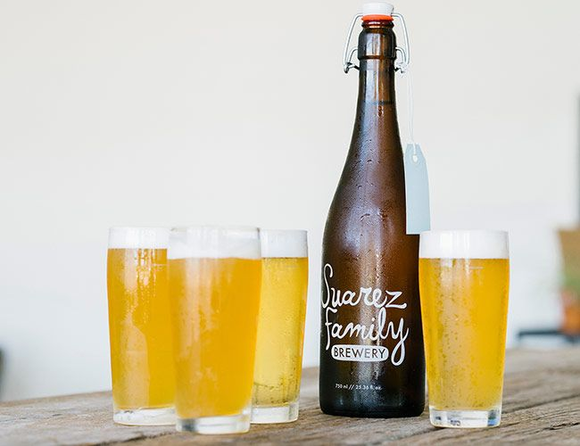

HOME
ALES
Saunter Brown Ale
Suarez Family Brewing Co.
English style brown ale. This batch exhibits smooth tootsie roll, bittersweet chocolate chips, roasted walnut, nice toast, caramel, a tad dried fruit and luscious yet crisp palate.
Located in Hudson, NY, the Suares Family Brewing Co. is a mom and pop production brewery specializing in ales of mixed fermentation, unfiltered lagers and other crispy little beers. Brewer owned and operated.
Check out their site HERE 